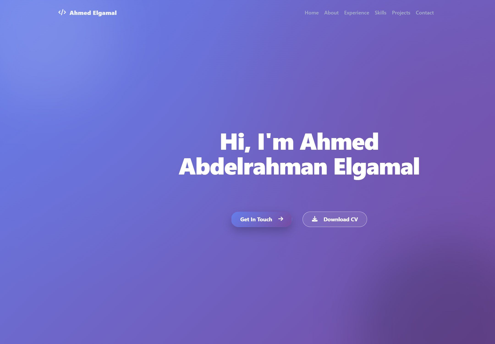
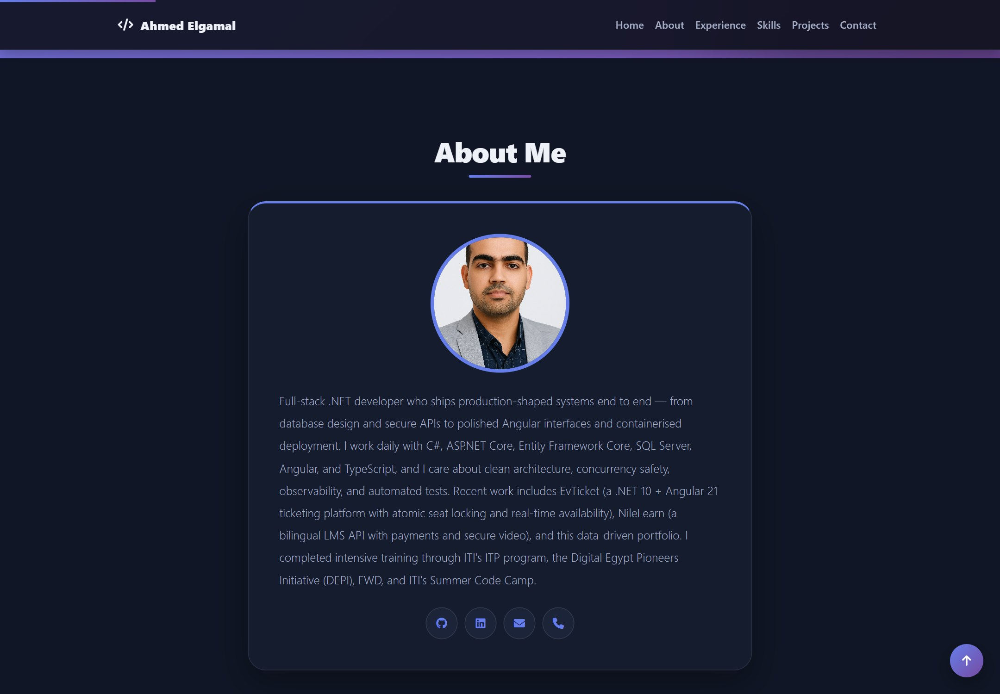
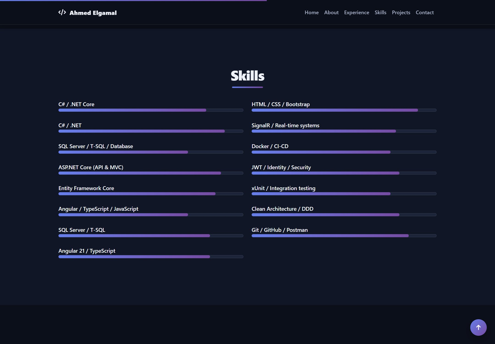
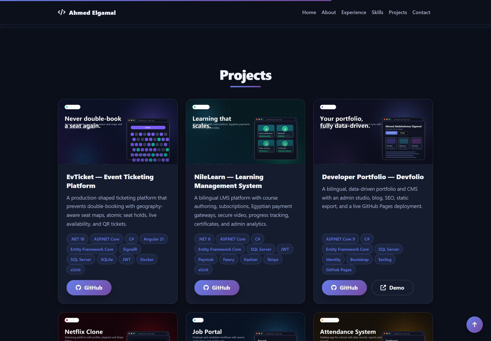
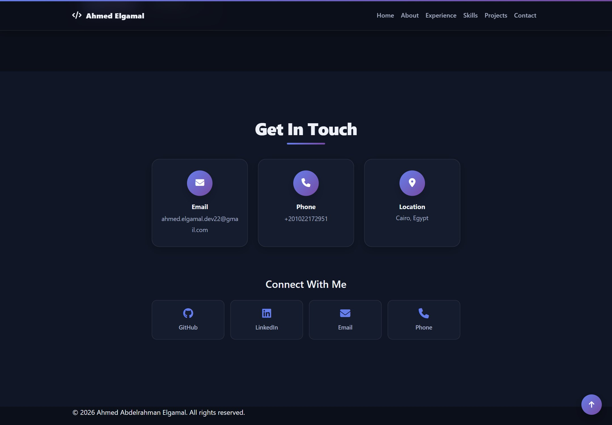

Content-managed sections
Projects, skills, experience, posts, messages and site settings are stored in SQL Server and edited from an admin area.
Devfolio is a bilingual developer portfolio with a private admin area for projects, skills, experience, posts and messages. The public site is exported to plain static files and published on GitHub Pages, so it stays fast and free to host while the content lives in SQL Server.
The public page is static; the authoring experience is a normal authenticated web application.
Projects, skills, experience, posts, messages and site settings are stored in SQL Server and edited from an admin area.
English and Arabic content for every section, with an RTL layout, translated navigation and a persistent language choice.
A token-based theme with a toggle that remembers the choice and respects the operating-system preference on first visit.
Category filters, technology chips, demo and source links, and project cards driven entirely by the database.
Messages are validated, stored and read from the admin area — no third-party form service required.
The admin export renders the public site to self-contained HTML and assets, ready for GitHub Pages or any static host.
Per-page titles and descriptions, canonical URLs, Open Graph tags and a generated sitemap for the public pages.
Identity-backed admin access, antiforgery validation, role checks and hardened cookie settings.
Local assets, lazy-loaded images, minimal JavaScript and a static deployment with no application server in the request path.
Captured from elgamalhub.github.io/devfolio — the real deployed export.





The admin app does the work; visitors get plain files.
gh-pages branch; GitHub Pages serves it at the custom project URL.